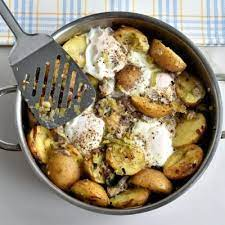

Home Page
Smoked mackerel & leek hash with horseradish

Make this mackerel and leek hash in just 30 minutes. It uses just a few ingredients and can be served in the pan, so makes a great choice on busy weeknights
Ingredients
- 250g new potatoes , halved
- 2 tbsp oil
- 2 large leeks , thinly sliced
- 4 eggs
- 100g peppered smoked mackerel , skin removed
- 2 tbsp creamed horseradish
Method
- Put the potatoes in a microwaveable bowl with a splash of water, cover, then cook on high for 5 mins until tender (or steam or simmer them).
- Meanwhile, heat the oil in a frying pan over a medium heat, add the leeks with a pinch of salt and cook for 10 mins, stirring so they don’t stick, until softened. Tip in the potatoes, turn up the heat and fry for a couple of mins to crisp them up a bit. Flake through the mackerel.
- Make four indents in the leek mixture in the pan, crack an egg into each, season, then cover the pan and cook for 6-8 mins until the whites have set and the yolks are runny. Serve the horseradish on the side, with the pan in the middle of the table.